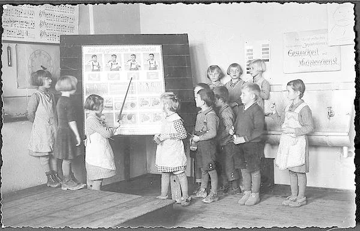

Mé počátky a dětství
Jmenuji se Jan Amos Komenský, i když mé rodné příjmení po předcích znělo Szeges.
Světlo světa jsem spatřil 28. března léta Páně 1592 na jihovýchodní Moravě.
Často jsem se podepisoval jako Nivnicensis, protože k Nivnici a Uherskému Brodu mě vázaly mé první kořeny.
Pocházel jsem z poctivé měšťanské rodiny, jež věrně stála při Jednotě bratrské.
Mé bezstarostné dětství však brzy zahalil smutek.
Když mi bylo pouhých dvanáct let, zasáhla náš kraj rána osudu přišel jsem o otce, matku i dvě sestry.
Ujala se mě tehdy má teta ve Strážnici, kde jsem udělal své první školní krůčky.
Zpět